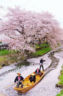
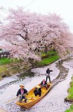

福岡城跡の観光情報 営業期間：公開：福岡城赤坂門石垣は毎土曜10～15時公開、交通アクセス：(1)大濠公園駅から徒歩で5分。福岡城跡周辺情報も充実しています

福岡城(福岡県福岡市)の見どころ
福岡城は別名、舞鶴城、石城と呼ばれています

会場周辺の道路は大変混雑します。駐車場は台数に限りがありますので、公共交通機関をご利用ください。 ※第1駐車場・第2駐車場の福岡城さくらまつり期間以外の駐車場営業時間についてはこちらをこ覧 …


福岡城(福岡市)の見どころや構造、歴史や雑学、さらに地図などのアクセス情報を写真つきで詳しくご紹介します
 会場周辺の道路は大変混雑します。駐車場は台数に限りがありますので、公共交通機関をご利用ください。 ※第1駐車場・第2駐車場の福岡城さくらまつり期間以外の駐車場営業時間についてはこちらをこ覧 …
会場周辺の道路は大変混雑します。駐車場は台数に限りがありますので、公共交通機関をご利用ください。 ※第1駐車場・第2駐車場の福岡城さくらまつり期間以外の駐車場営業時間についてはこちらをこ覧 …
会場周辺の道路は大変混雑します。駐車場は台数に限りがありますので、公共交通機関をご利用ください。 ※第1駐車場・第2駐車場の福岡城さくらまつり期間以外の駐車場営業時間についてはこちらをこ覧 …